무선설비기사 (2008-07-27 기출문제)
1과목: 디지털 전자회로
1. 진폭변조에서 신호전압음 es=Essinωst, 반송파 전압을 ec=Ecsinωct 라 할 때 피변조파 전압 e(t)를 표시하는 것은?
- e(t) = (Ec + Es)sinωst
- e(t) = (Ec + Es)sinωct
- e(t) =(Ec+Es sinωst) sinωct
- e(t) =(Es+Ec sinωct) sinωst
(정답률: 59%)

2. 다음 중 발진회로에 대한 설명으로 틀린 것은?
- CR 발진기는 비교적 낮은 주파수에 적합하다.
- 수정 진동자의Q는 매우 크다.
- 부계환을 시키면 발전 주파수가 증가한다.
- 수정발진기는 유도성 리액턴스에서 증가한다.
(정답률: 60%)
3. 그림의 회로에서 V1-3[V], R1-450[kΩ], R1-150[Ω] 일 때 출력전압 Vo-[V]는?
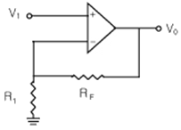
- 1[V]
- 12[V]
- 15[V]
- 18[V]
(정답률: 62%)
4. 전압직렬(Voltage Series) 궤환증폭기의 일반적인 특성이 아닌것은?
- 주파수 대역폭이 증가한다.
- 비직선 일그러짐이 감소한다.
- 입력저항이 감소한다.
- 출력저항이 감소한다.
(정답률: 알수없음)
5. 비동기식 계수기[Counter)의 일반적인 설명으로 거리가 먼 것은?
- 리플 카운터라고도 한다.
- 동작속도가 동기식보다 비교적 느리다.
- 전단의 출력이 다음 단의 입력이 된다.
- 동작속도가 동기식보다 고속이다.
(정답률: 91%)
6. JK 플립 플롭의 동작에 관한 설명으로 옳지 않은 것은?
- J=0, K=0일 때는 변하지 않는다.
- J=0, K=1일 때는 Q가 0으로 된다.
- J=1, K=0일 때는 Q가 1로 된다.
- J=1, K=1일 때는 반전되지 않는다.
(정답률: 84%)
7. 논리식
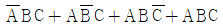
을 간단히 하면?- B(A+C)
- AB+BC+AC
- C(A+B)
- A+B+C
(정답률: 90%)
8. B급 푸시풀 증폭기의 출력 파형에 포함된 고조파는?
- 기수 고조파
- 우수 고조파
- 제2, 제3 고조파
- 기수와 우수의 모든 고조파
(정답률: 59%)
9. 다음 중 CP-AMP를 이용한 미분기에서 출력은 무엇에 비례하는가?
- 시정수
- of fset 전압
- of fset 전류
- 1/시정수
(정답률: 70%)
10. 다음 중 전력 증폭기의 종류에 속하지 않는 것은?
- A급 증폭기
- B급 증폭기
- AB급 증폭기
- AC급 증폭기
(정답률: 85%)
11. 다음의 자기 바이어스회로(self-bias)에서 Ic의 경우 Ico에 대한 안정계수 S의 이론적 최소치는 어느 경우인가? (단, 1+β≫RB/RE, RB=R1//R2이다. )
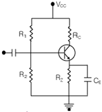
- RB/RE → 100 일 때
- RB/RE → 0 일 때
- RB/RE → ∞ 일 때
- RB/RE → 1+β 일 때
(정답률: 59%)
12. 변조도 60[%]의 AM에서 반송파의 평균 전력이 100[w]일 때 피변조파의 평균전력은 몇 [w] 인가?
- 118
- 130
- 136
- 160
(정답률: 알수없음)
13. 그림과 같은 전력증폭기에서 부하 ZL 크기는? (단, 권선비는 N:1의 이상변압기이다. )
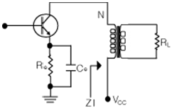
- RL
- 1/RL
- RLtRe
- N2RL
(정답률: 70%)
14. 다음 중 단일 축파대 통신방식에 사용되는 변조회로는?
- 베이스 변조
- 컬렉터 변조
- 제곱 변조
- 링 변조
(정답률: 알수없음)
15. 출력전압이 40[V]인 증폭기에서 2-j 2√-3[V]의 전압을 궤환시켰을 때 궤환율 β는 얼마인가?
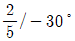
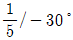
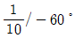
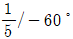
(정답률: 43%)
16. 다음과 같은 다이오드 회로에서 전달특성으로 적합한 것은? (단, VZ는 ZD1과 ZD2의 항복전압이다.)
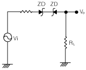
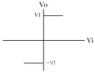
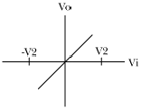
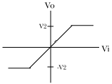
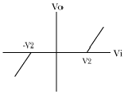
(정답률: 77%)
17. 완충증폭기(Buffer Amp)에 관한 설명으로 틀린 것은?
- 발진기 출력과 부하 사이에 결합용도로 사용한다.
- 높은 입력저항의 특성을 갖는다.
- 부하의 변동이 발진회로에 영향을 미치지 않도록 한다.
- 회로구성은 이미터접지 증폭회로이다.
(정답률: 88%)
18. 그림에서 V1=Vmsinα[V]일 때, 부하 저항 RL양단에 나타나는 직류 평균전압[V]는? (단, Im=
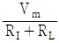
, Rf는 다이오드의 순방향 저항)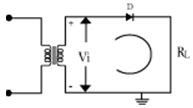
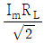
- ImRL
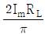
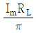
(정답률: 62%)
19. 다음 연산증폭기 회로에서 입출력 특성은? (단, 연산증폭기 A1, A2와 다이오드 D1, D2는 이상적임)
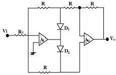
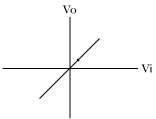
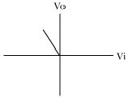
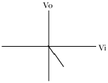
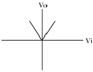
(정답률: 91%)
20. 다음과 같은 검파회로에서 시정수 (τ=CR)를 반송파 주기의 10배로 하고자 할 때 C[㎊]를 얼마로 해야 하는가? (단, 입력축 반송파 주파수는 100[㎒], R은 10[㏀])
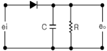
- 0.1
- 1
- 10
- 100
(정답률: 58%)
2과목: 무선통신 기기
21. 동일 비트율일 때 4진 PSK의 전송 대역폭은 16진 PSK의 전송 대역폭의 몇 배인가?
- 2배
- 4배
- 8배
- 16배
(정답률: 77%)
22. 다음 중 GPS 시스템에 대한 설명으로 적합하지 않은 것은?
- GPS는 시간과 장소에 관계없이 항체의 3차원적 위치 속도 및 시간에 대해 연속적 정보를 제공한다.
- GPS의 우주부문은 모두 24개의 위성으로 구성되며 12시간을 주기로 지구 주위를 회전한다.
- 정확한 위치 측정을 우해서4개 이상의 위성으로부터 정보가 필요하다.
- GPS 위치 측정 오차 원인에 전리충의 굴절은 포함되지 않는다.
(정답률: 75%)
23. 주파수 18 ~ 20[㎒]에서 동작하는 증폭기의 입력저항은 10[㏀]이고 주위 온도는 27[℃]이다. 이 증폭기의 입력단에서 발생하는 잡음전압은 약 몇 [㎶] 인가? (단, 볼쯔만의 상수는 k=1.38×10-23[J/K]이다.)
- 10[㎶]
- 12[㎶]
- 18[㎶]
- 24[㎶]
(정답률: 62%)
24. 다음 중 전계강도 측정기로 전계강도를 측정할 때 발생되는 기능상의 오차로 적합하지 않은 것은?
- 외부잡음에 의한 오차
- 수직 안테나에 의한 오차
- 국부발진기의 주파수 변동에 의한 오차
- 수신 증폭부의 비직선성에 의한 오차
(정답률: 알수없음)
25. 다음 중 무선송신기에 사용되는 발진기의 요구조건으로 적합하지 않은 것은?
- 고조파 발생이 많을 것
- 주파수 안정도가 높을 것
- 주파수의 미세조정이 용이할 것
- 부하의 변동에 대한 영향이 적을 것
(정답률: 알수없음)
26. 다음 중 AM검파기에서 발생하는 왜곡이 아닌 것은?
- 직선왜곡
- 동기왜곡
- Diagonal clipping왜곡
- Negative peak clipping왜곡
(정답률: 55%)
27. 다음 중 전원장치에 사용되는 명활회로에 대한 설명으로 적합하지 않은 것은?
- 일종의 저역통과 필터이다.
- 콘덴서 입력형과 초크 입력형이 있다.
- 콘덴서 입력형은 대전류용으로 부적합하다.
- 초크 입력형의 맥동률은 부하저항이 클수록 좋다.
(정답률: 79%)
28. 다음 중 실효선택도에 속하지 않는 것은?
- 혼변조
- 상호변조
- 강도억압효과
- 스퓨리어스 레스폰스
(정답률: 59%)
29. 다음 중 연축전지의 주요 고장 원인이 아닌 것은?
- 국부방전
- 극판의 안곡
- 극판의 개방
- 극판의 부식
(정답률: 알수없음)
30. 다음 중 FM 송신기의 전력측정법으로 가장 적합하지 않은 것은?
- 수부하법
- C-M형 전력계법
- 열량계에 의한 전력측정
- 볼로미터 브릿지에 의한 전력측정
(정답률: 80%)
31. 다음 중 QAM에 대한 설명으로 적합하지 않은 것은?
- APX의 한 종류로 잡음과 위상 변화에 우수한 특성을 가진다.
- CAM 신호는 2개의 직교성 DSB-SC 신호를 선형적으로 합성한것이다.
- 비동기 검파 또는 비동기 직교 검파 방식을 사용하여 신호를 검출한다.
- 동일한 전송 에너지일 때M진 QAM은 M진 PSK 변조방식보다 오류 확률이 낮다.
(정답률: 79%)
32. 다음 중 PLL 주파수 합성기의 주요 성능 평가 파라미터에 속하지 않는 것은?
- 루프이득
- 동기성능
- 위상잡음
- 의사잡음
(정답률: 73%)
33. 비 검파기를 Foster-Seeiey 형과 비교하여 설명한 것 중 적합하지 않은 것은?
- 다이오드의 결선 방향이 다르다.
- 출력 축에 큰 용량의 콘덴서가 접속되어 있다.
- 검파출력전압은2배이고 출력전압의 극성은 동일하다.
- 중성점이 접지되어 있다.
(정답률: 74%)
34. 다음 SSB 통신방식의 특징에 대한 설명 중 적합하지 않은 것은?
- 비트 방해가 많이 발생한다.
- 송수신기는 직선성이 좋아야 한다.
- DSB 방식보다 주파수가 더 안정되어야 한다.
- 선택성 페이딩의 영향은DSB 방식보다 적게 받는다
(정답률: 54%)
35. 다음 중 송신기의 부속장치(회로)에 속하지 않는 것은?
- 보안회로
- 전원장치
- 냉각장치
- 정보회로
(정답률: 75%)
36. 다음 중 PM 계 순시 편이 제어(IDC) 회로의 기본 구성에 속하지 않는 것은?
- 미분회로
- 적분회로
- 리미터회로
- 프리엠퍼시스 회로
(정답률: 75%)
37. 4[㎑]의 신호파로 150[㎒]의 반송파를 FM 변조 시 최대 주파수 편이가 20[㎒]이라면 점유주파수 대역폭은?
- 8[㎑]
- 12[㎑]
- 24[㎑]
- 48[㎑]
(정답률: 알수없음)
38. 다음 중 수신기의 중간주파수가 낮을수록 개선되는 것은?
- 인입 현상
- 지연 특성
- 전기적 충실도
- 근접 주파수 선택도
(정답률: 93%)
39. 다음 중 전력 증폭기에서 AF 파워 모듈 사용시 주의해야 할 점으로 적합하지 않은 것은?
- 실드 케이스 등의 접지를 완벽히 한다.
- 모듈의 리드선은 가능한 한 짧게 한다.
- 입출력 부분의 임피던스 정합에 주의한다.
- 전원 공급선의 디커플링은 생략해도 된다.
(정답률: 77%)
40. 무선 송신기의 EIRP 규경이 50[dBW] 일 때 송신기 출력 전력은 몇 [㎾] 인가? (단, 안테나 이득 10[㏈], 급전선 손실 0[㏈] 이다.
- 1[㎾]
- 5[㎾]
- 10[㎾]
- 100[㎾]
(정답률: 알수없음)
3과목: 안테나 공학
41. 다음 중 마이크로파 전송로로 사용되는 도파관의 특성에 대한 설명으로 적합하지 않은 것은?
- 저항손실이 적다.
- 유전체 손실이 적다.
- 고역롬과 필터로 작용한다.
- 외부 전자계의 영향을 많이 받는다.
(정답률: 알수없음)
42. 다음 중 잡음 방해의 개선방법으로 적합하지 않은 것은?
- 인공잡음을 경감 시킨다.
- 내부잡음 전력을 감소 시킨다.
- 수신기의 대역폭을 넓힌다.
- 다양성 안테나의 사용 등에 의한 수신 신호전력을 크게 한다.
(정답률: 90%)
43. 반파장 다이폴 안테나의 실효개구면적은 약 몇 [m2]인가?
- 0.12λ
- 0.12λ2
- 0.13λ
- 0.13λ2
(정답률: 75%)
44. 다음 빔(Beam) 안테나에 대한 설명 중 옳지 않은 것은?
- 안테나의 배열간격은 주로
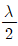
이다. - 근접주파수의 혼신 및 방해가 크다.
- 이득이 크고 지향성이 예민하다.
- 공전 및 인공잡융의 방해를 경감시킬 수 있다.
(정답률: 70%)
45. 복사전력이 100[W]인 반파장 다이폴 안테나에 의한 최대 복사방향으로 1000[m] 떨어진 절의 전계강도의 세기는약 몇 [㎷/m] 인가?
- 67[㎷/m]
- 70[㎷/m]
- 99[㎷/m]
- 313[㎷/m]
(정답률: 39%)
46. 다음 중 반파장 다이폴 안테나에 대한 설명으로 적합하지 않은 것은?
- 실효고는
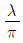
이다. - 복사저항은 73.1[Ω]이며, 절대이득은 1(0[㏈])이다.
- 수평면내 지향 특성은8자형 특성을 갖는다.
- 주로 난파대의 송, 수신 안테나로 고정통신에 사용한다.
(정답률: 53%)
47. 다음 중 카세그레인(cassegrain) 안테나에 대한 설명으로 가장 적합하지 않은 것은?
- 부엽이 매우 작다.
- 초점거리가 짧고,반사기에서 고이득이 얻어진다.
- 1개의 복사기와 1개의 반사기로 구성된 안테나이다.
- 위성 지구국웅으로 사용될 경우 대지 잡음을 적게 받기 때문에 저잡음 특성을 나타낸다.
(정답률: 59%)
48. 다음 중 손실저항이 발생하는 원인으로 적합하지 않은 것은?
- 코로나 손실
- 도체저항에 의한 손실
- 복사저항에 의한 손실
- 첩지저항에 의한 손실
(정답률: 50%)
49. 다음 중 전리충의 높이가 지상 약 100km 정도이며, 주간이나 야간에 높이의 변화가 거의 없는 전리층은?
- E층
- Es층
- F1층
- F2층
(정답률: 69%)
50. 개구지름이 2[m]의 파라볼라 안테나가 주파수(f) 6000[㎒]에서 이득이 40[㏈] 이상 얻으려면 개구효율은 약 몇 [%]이상 되어야 하는가?
- 25.2[%]
- 30.6[%]
- 40.5[%]
- 63.4[%]
(정답률: 40%)
51. Slot array 안테나에 대한 설명 중 적합하지 않은 것은?
- 부엽이 적고 효율이 높다.
- 급전은 안테나의 중앙부 또는 한쪽 끝에서 한다.
- 선박용 레이더 안테나 등에 사용된다.
- 다수의 Slot에 의해 관벽과 같은 방향에 날카로운 빔이 얻어진다.
(정답률: 알수없음)
52. 다음 라디오 덕트의 생성 원인에 의한 분류 중 적합하지 않은 것은?
- 전선에 의한 덕트
- 야간 냉각에 의한 덕트
- 대양상의 덕트
- 전파 편파에 의한 덕트
(정답률: 알수없음)
53. 다음 중 안테나 특성을 광대역으로 하기 위한 방법으로 적합하지 않은 것은?
- 안테나의 Q를 적게 한다.
- 진행파 안테나로 한다.
- 안테나 도선의 직경이 가늘어야 한다.
- 자기상사형으로 한다.
(정답률: 84%)
54. 다음 중 초단파가 가시거리 외에도 전파되는 것은 무엇에 의한 전파인가?
- 대지 반사파
- 전리층 반사파
- 대류권 반사파
- 전리층 진행파
(정답률: 40%)
55. 다음 야기 안테나에 대한 설명 중 적합하지 않은 것은?
- 반치폭은 약 60도 정도이다.
- 반사기, 투사기, 도파기 등으로 구성된다.
- 지향성은 도파기에서 투사기 쪽으로 향하는 단방향이다.
- 구조가 간단하면서도 이득이 크나 협대역이라는 단점이 있다.
(정답률: 알수없음)
56. 다음 Super turnstile 안테나에 대한 설명 중 옳지 않은 것은?
- 안테나 이득은 적립단수에 비례한다.
- 주로 텔레비전 방송 송신용으로 사용한다.
- 수평면에서 지향성은 거의 무지향성이다.
- 박쥐 날개형(batwing)안테나 2개를 직각으로 배치하고 180° 위상차를 주어 외곽에서 급전한다.
(정답률: 75%)
57. 다음과 같은 방향성 결합기에서 입력단 A에 1[W]의 전력이 공급될 때 부도파관 출력단 C에 1[mW]출력이 나타나면 이 방향성 결합기의 결합계수는 몇[dB]인가?
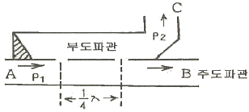
- 10[dB]
- 17[dB]
- 27[dB]
- 30[dB]
(정답률: 82%)
58. 특성임피던스가 50[Ω]인 급전선에 복사임피던스가 75 +j30[Ω]인 안테나를 연결하였다. 급전선상의 전압정재파비의 크기는 약 얼마인가?
- 1.2
- 1.5
- 1.8
- 2.1
(정답률: 59%)
59. 지표파의 전파성질에 대한 설명으로 적합하지 않은 것은?
- 지표의 유전율이 클수록 감쇠를 적게 받는다.
- 지표의 도전율이 클수록 감쇠를 적게 받는다.
- 주파수가 낮을수록 감쇠를 적게 받는다.
- 수평편파 보다는 수직편파 쪽이 감쇠가 적다.
(정답률: 85%)
60. 다음 중 도파관의 임피던스 정합방법으로 맞지 않은 것은?
- 매직 T에 의한 정합
- 창(window)에 의한 정합
- 도체봉(post)에 의한 정합
- 스터브(stub)에 의한 정합
(정답률: 92%)
4과목: 무선통신 시스템
61. 다음 중 OSI 7계층에서 상위계층과의 연결을 설정하고 정보교환 및 경로 설정 기능을 하는 계층은?
- 물리계층
- 응용계층
- 세션계층
- 네트워크계층
(정답률: 82%)
62. 다음 중 위성체에 사용되는 무지향성 안테나의 용도로 가장 적합한 것은?
- 11[㎓] 대역에서 무선측위용으로 주로 사용된다.
- Pencil Beam을 얻을 수 있어서 중계용으로 사용된다.
- 위성체의 명령이나 원격제어에 관한 데이터 전송을 위한 것이다.
- 차세대 위성 안테나 기술 중의 하나로Multi Beam 용으로 사용된다.
(정답률: 60%)
63. DS-CDMA 기술을 사용하는 이동전화시스템에 대한 설명 중 적합하지 않은 것은?
- 레이크 수신기의 사용으로 페이딩에 대한 영향을 많이 줄일 수 있다.
- 주파수 도약방식 사용으로 암호화 기능이 있어 감정이 곤란하다.
- 단말기에 부여되는 확산코드는 코드간 거의 직교성을 갖는다.
- 전력제어를 통해 셀 내의 사용자로부터 기지국에 수신되는 신호감도는 균일하게 유지된다.
(정답률: 65%)
64. 이동통신의 무선망 설계시 고려사항으로 가장 관련이 적은 것은?
- 채널할당
- 트래픽 분석
- 전계강도 분석
- 유지보수장치 성능 분석
(정답률: 82%)
65. 다음 근거리/원거리 문제(Near-tar problem)에 대한 설명 중 옳은 것은?
- 페이딩 현상이 주 원인
- CDMA 시스템에서 발생
- 도플러 효과에 의해 발생
- 확산이득을 증가시키면 근거리/원거리 문제는 경감됨
(정답률: 46%)
66. 다음 중 마이크로파 중계방식에 대한 설명으로 적합하지 않은 것은?
- 직접 중계방식은 동화로의 삽입 및 분기가 곤란하다.
- 헤테로다인 중계방식은 근거리 중계회선에 주로 사용된다.
- 검파 중계방식은 변복조장치가 부가되어 있어 장치가 복잡하다.
- 무급전 중계방식에 있어서는 반사관의 크기가 클수록 손실이 적다.
(정답률: 알수없음)
67. 다음 중 무선통신망 치국 계획상 고려할 사항에 해당하지 않는 것은?
- 총장비 이득
- 총경로 손실
- 통신망 성능
- 가시거리 확보
(정답률: 80%)
68. 다음 중 위성체의 트랜스폰더(transponder)를 구성하는 요소가 아닌 것은?
- 입력필터
- 추미장치
- 저잡음증폭기
- 고전력증폭기
(정답률: 82%)
69. 이동통신시스템 기지국의 최번 시 1시간 동안 총 통화호수가 1650호이고 평균 통화 시간이 2분 일 때 통화량은 몇 [ErI]인가?
- 42[ErI]
- 55[ErI]
- 55[ErI]
- 74[ErI]
(정답률: 알수없음)
70. 다음 중 무선 LAN의 특징으로 적합하지 않은 것은?
- 복잡한 배선이 필요 없다.
- 단말기의 재배치 시 용이하다.
- 일반적으로 유선LAN에 비하여 상대적으로 높은 전송속도를낸다.
- 신호간섭이 발생할 수 있다.
(정답률: 89%)
71. CDMA 이동통신 시스템의 우선경로상에서 페이딩 등에 의한 버스터 에러를 방지하기 위하여 송신측에서 데이터를 일정한 규칙에 따라 이산시키는 방법은?
- 심볼반복
- 인터리빙
- 컨버루션 부호화
- 데이터 스크램블링
(정답률: 72%)
72. 다음 중 대기잡음의 종류에 속하지 않는 것은?
- 클릭
- 에코
- 힛싱
- 그라인더
(정답률: 80%)
73. 다음 중 백색잡음(white noise)에 대한 설명으로 적합하지 않는 것은?
- 레일리 분포특성을 보인다.
- 열잡음이 대표적인 예이다.
- 백색잡음은 신호에 더해지는 형태이다.
- 주파수 전 대역에 걸쳐 전력스팩트럼 밀도와 거의 일정하다.
(정답률: 88%)
74. 다음 중 위성의 자세제어방식으로 사용되는 3축 제어방식에 대한 설명으로 적합하지 않은 것은?
- 자세 안정도가 높다.
- 3축이란 yaw, roll, pitch 축을 말한다.
- 소형위성의 자세제어방식으로 적합하다.
- bias 오앤텀방식과 zero 모앤텀방식이 있다.
(정답률: 77%)
75. 이동통신에서의 상관대역폭(cohereace bandwidth)과 가장 관련이 깊은 것은?
- 음영효과
- 지연확산
- 안테나 이득
- 도플러 주파수
(정답률: 70%)
76. 다음 중 전파 장해가 20[MHz] 이상의 높은 주파수에서 심하게 나타나며 위도가 높은 지방일수록 영향이 더 큰 것은?
- 자기 폭풍
- 델린저 현상
- 코로나 손실
- 룩셈부르그 효과
(정답률: 60%)
77. M/W 통신에서 송신출력이 1[W], 송수신 안테나 이득이 각각 30[dBi], 수신 입력 레벨이 -30[dBm] 일 때, 자유공간 손실은 몇 [dB]인가? (단, 전송전로 손실 및 기타손실은 무시한다. )
- 112[dB]
- 117[dB]
- 120[dB]
- 123[dB]
(정답률: 75%)
78. 2단 증폭기에서 초단 증폭기 이득이 20, 잠옴지수가 2이고, 다음 단 증폭기의 이득이 15, 잡음지수가 4일 때 증폭기의 종합 잡음지수는 얼마인가?
- 2
- 2.15
- 2.2
- 3.15
(정답률: 알수없음)
79. 통신 프로토콜의 계층화 개념에서, 데이터가 상위계층에서 하위계층으로 내려가면서 데이터에 제어정보를 덧붙이게 되는데 이를 무엇이라 하는가?
- framing
- flow control
- encapsulatlon
- transmission control
(정답률: 93%)
80. 다음 중 마이크로파 통신에서 잡음방해에 대한 개선방법으로 적합하지 않은 것은?
- 광대역 증폭기를 사용하여 대역폭을 넓힌다.
- 인공잡음의 발생원에 필터를 사빕하거나 차폐시킨다.
- 안테나의 지향성을 예민하게 하여 수신전력을 크게한다.
- 수신입력단 증폭기의 설계를 적절하게 하여 내부잡음을 적게한다.
(정답률: 80%)
5과목: 전자계산기 일반 및 무선설비기준
81. 부동소수점 표현에서 정규화(normalize)시키는 이유는?
- 숫자표시를 간결하게 하기 위하여
- 연산속도를 증가시키기 위하여
- 유효숫자를 늘리기 위하여
- 수치계산을 편리하게 하기 위하여
(정답률: 86%)
82. 지정된 조건을 만족하는 데이터 항목을 확인하는데 필요한 평균시간을 무엇이라 하는가?
- cycle time
- access time
- Seek time
- Search time
(정답률: 82%)
83. 시스템 동작 개시 후 최초로 주기억장치에 프로그램을 load 하는 것은?
- operating system
- bootstrap loader
- mapping operator
- editor
(정답률: 63%)
84. 다중 IP 주소에 의해 동종 또는 이종 링크에 다중 접속을 실현할 수 있는 것은?
- roaming
- multihoming
- hand-off
- 무선 LAN
(정답률: 79%)
85. 각 프로세스에게 순차적으로 일정한 Time Slice 동안 처리기를 차지하도록 하는 프로세스 스케줄링 정책은?
- Deadlock
- Swapping
- Round Robin
- Spooling
(정답률: 77%)
86. 주소신호선의 수를 N 개, 데이터의 수를 n 비트, IC의 기억용량을 M비트라 할 때 관계식은 N=log2(M/n)이다. 64k bit의 LSI 칩으로 4bit씩 묶어서 입ㆍ출력하는 경우 신호선의 수는?
- 10
- 12
- 14
- 16
(정답률: 36%)
87. 다음 중 컴퓨터의 명령어 형식에서 연산자 형식이 아닌 것은?
- 메모리 참조 명령 형식
- 레지스터 참조 명령 형식
- 주소 참조 명령 형식
- 입출력 명령 형식
(정답률: 알수없음)
88. 캐시 메모리의 기록 정책 가운데 쓰기(write) 동작이 이루어질 때마다 캐시 메모리와 주기억장치의 내용을 동시에 갱신하는 방식은?
- write-through
- write-back
- write-once
- write-all
(정답률: 79%)
89. 다음 중 데이터베이스의 특성에 속하지 않는 것은?
- 중복데이터의 배제
- 비밀보호장치의 유지
- 데이터 상호간의 연결성
- 프로그램과 데이터의 종속성
(정답률: 82%)
90. 다음 중 애러검출 코드는?
- ASCII 코드
- EBCDI C코드
- Hamming코드
- BCD 코드
(정답률: 85%)
91. 중파방송의 경우에 지상파의 전계강도가 미터마다 얼마 이상인 지역을 블랭킷에어리어라고 하는가?
- 0.1볼트 이상
- 0.5볼트 이상
- 1볼트 이상
- 1.5볼트 이상
(정답률: 77%)
92. 초단파방송을 행하는 방송국 송신설비의 공중선전력 허용편차는?
- 상한 5퍼센트, 하한 10퍼센트
- 상한 10퍼센트, 하한 20퍼센트
- 상한 20퍼센트, 하한 50퍼센트
- 상한 50퍼센트, 하한 20퍼센트
(정답률: 100%)
93. 전파자원의 공평하고 효율적인 이용율 촉진하기 위하여 필요한 경우에 시행하여야 하는 사항이 아닌 것은?
- 주파수 분배의 변경
- 주파수의 국제등록
- 새로운 기술방식으로의 전환
- 주파수의 회수 또는 주파수 재배치
(정답률: 알수없음)
94. 총톤수 40톤 미만인 어선의 의무선박국의 정기검사 유효기간은?
- 1년
- 2년
- 3년
- 5년
(정답률: 29%)
95. 간이우선국의 우선국 개설허가의 유효기간은?
- 1년
- 3년
- 5년
- 7년
(정답률: 알수없음)
96. 다음 중 형식검정을 받아야 하는 무선설비의 기기가 아닌 것은?
- 이동가입무선전화장치
- 비상위치지시용 우선표지설비
- 디지털선택호출전용수신기
- 선박에 설치하는 경보자동수신기
(정답률: 59%)
97. 다음 중 공중선계가 충족하여야 할 조건이 아닌 것은?
- 공중선은 이득이 높을 것
- 수신주파수는 운용범위 이내일 것
- 정합은 신호의 반사손실이 최소화 되도록 할 것
- 지향성은 복사되는 전략이 목표하는 방향을 벗어나지 아니하도록 안정적일 것
(정답률: 15%)
98. 송신설비의 공중선 등 고압전기를 통하는 장치는 사람이 보행하거나 기거하는 평면으로부터 몇 미터 이상의 높이에 설치하여야 하는가?
- 2미터
- 2.5미터
- 3미터
- 3.5미터
(정답률: 79%)
99. 다음 중 전파감시업무에 속하지 않는 것은?
- 혼전을 일으키는 전파의 탐지
- 허가받은 무선국에서 발사한 전파의 탐지
- 공장자동화설비 등으로부터 발사되는 불요파의 탐지
- 무선국에서 사용하고 있는 주파수의 대역폭 등 전파의 품질 측정
(정답률: 42%)
100. 주어진 발사에서 용이하게 식별되고 측정할 수 있는 주파수를 무엇이라 하는가?
- 기준주파수
- 지정주파수
- 독성주파수
- 필요주파수
(정답률: 62%)